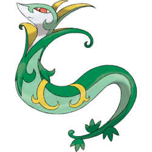
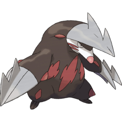

| Pokemon | Description | Team Combos |
|---|---|---|
|  | You can use Substitute and your ability makes your attack increase rather than decrease, so spam Leaf Storm for up to 6x damage with STAB. | |
|  | During a sandstorm, no pokemon outspeeds you. You have high base damage and effective STAB. If you catch your opponent off guard, you can swords dance to 100-0 anyone. | |
| You have high base defensive stats for the first turn. Use Belly Drum to achieve 6x damage with STAB and Aqua Jet, a STAB priority takes care of the rest. | ||
| Your base attack is really high. Your STAB moves do extra damage and take away the opponent's items. Your ability makes your stats increase instead of lower. You have a access to Sucker Punch, a priorit STAB move. |
Click the button to determine the undeniable, best character in the game.
This website was created by Grant "G Buttersnaps" Roess and Danny "D Money" Spencer